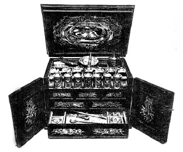

ŞEKİL 77. Ev ve gezi ecza sandığı (1615 dolayı, Augsburg / Almanya yapımı): Yan ve üst kapakların iç yüzeyinde gümüş kabartma süsler bulunan çekmeceli sandıkça şeklindeki bu ecza dolabı, abanozdan yapılmıştır. Üst rafta bir büyük ve yedi adet küçük gümüş kutu, sekiz adet gümüş vida kapaklı cam şişecik, bir adet dereceli kap, bir adet gümüş öğütme kâsesi, ayrıca da farmasötik ve tıbbî gereçler bulunmaktadır. Bu takımın önemli parçası, kapak kısmına yerleştirilmiş bulunan 430 gram ağırlığındaki gümüş işlemeli kan alma kâsesidir. “H. L.” harflerini ve bir çam kozalağı şeklinde amblemleri taşıyan gümüş gereçler, Augsburg’lu Usta Hans Lenghart’ın yapımı olduğunu göstermektedir (Alman Eczacılık Müzesi, Heidelberg).47